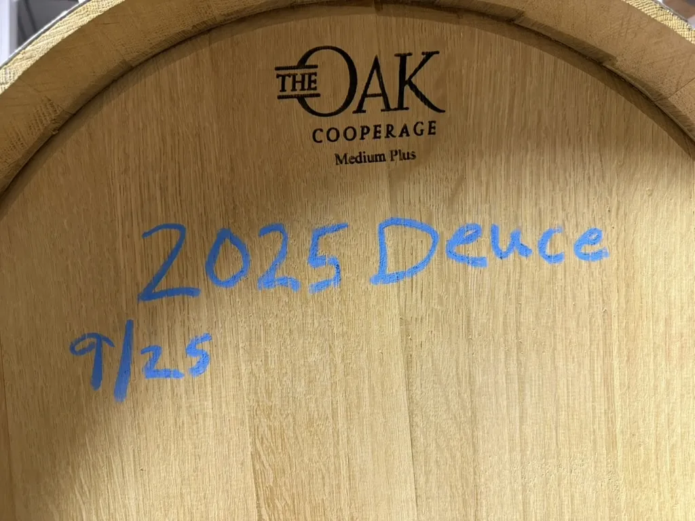
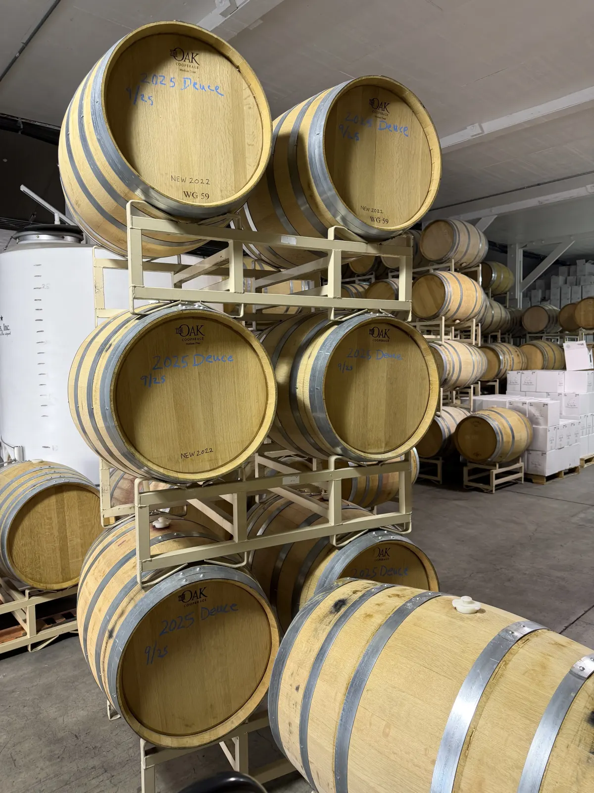
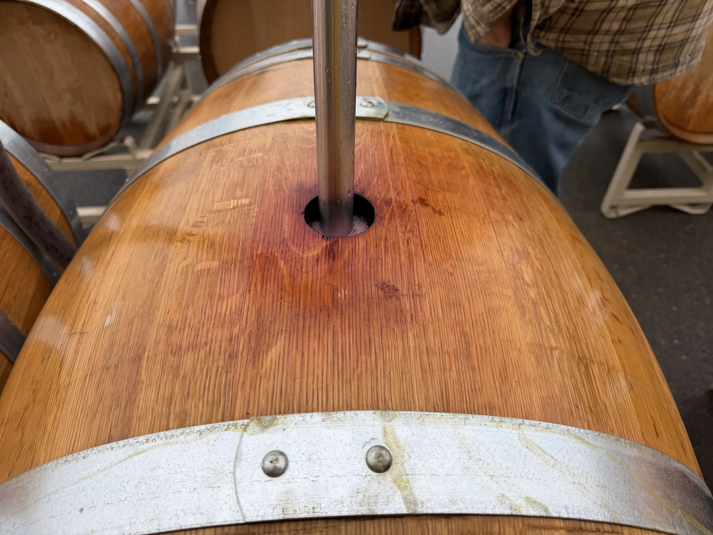
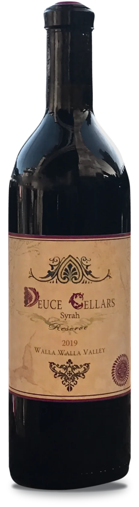

2025

2025 Reserve Syrah
This year’s harvest went into Missouri oak this fall. It will stay there close to three years before we bottle it.
In barrelJoin the list

One wine, made the same way every year. The current release, older vintages from 2011 to 2018, and verticals that put the years side by side.


One wine, made the same way every year. Move the slider to see each vintage, from the oldest in the library to the bottles still resting.
We hold back bottles from every vintage and let them rest in the cellar. These are the last of them. The oldest are limited to one bottle per guest. Tap a bottle to see the label up close.
Same vineyard, same oak, same recipe. A vertical shows what each season brought to the glass.
Finished, bottled and waiting until they’re ready. Tap Notify me and we’ll email you on release day.

This year’s harvest went into Missouri oak this fall. It will stay there close to three years before we bottle it.